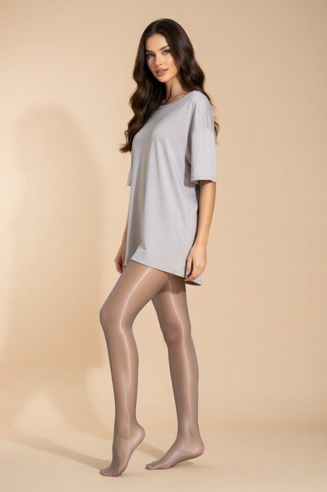
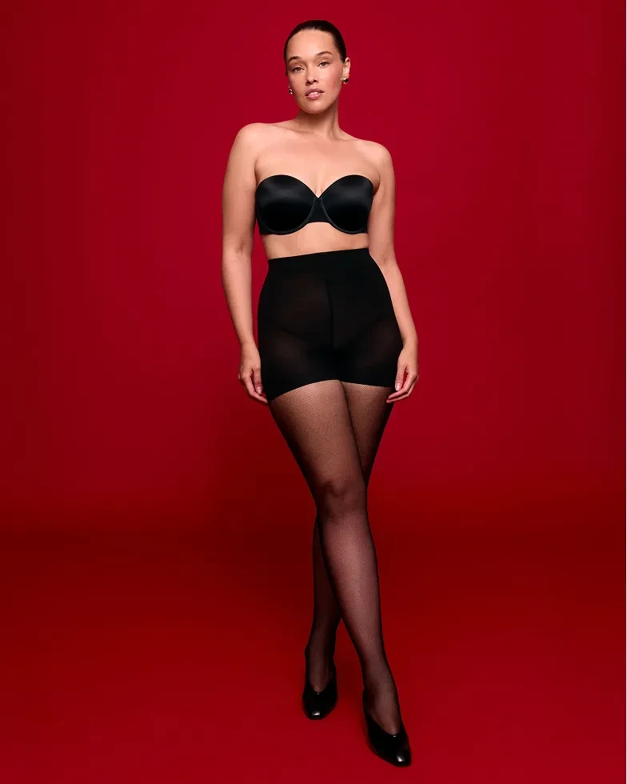

Журнал Под лупой Хронология Мои фотографии Обновляется из источников
Новые публикации Новые публикации с исходными датами. Готовые разборы можно читать на ТОНКО, остальные материалы доступны у авторов.
Появились обновления. Показать Все публикации Читать на ТОНКО У источников
Bracatus Опубликовано 25 ноября 2026 Новое
Сегодня достаточно надеть одну пару колготок, чтобы закрыть ноги от талии до кончиков пальцев. Причём можно выбрать практически…
Полный текст у источника ↗ NYLO Journal Опубликовано 25 ноября 2026 Новое
Rings and watch off, nails trimmed, gloves on. Then gather one leg down to the toe, set your…
Полный текст у источника ↗ Bracatus Опубликовано 25 ноября 2026 Новое
Мы изучали отзывы и обсуждения на форумах, чтобы понять, почему многие продолжают зимой носить тонкие колготки с юбками…
Полный текст у источника ↗ Bracatus Опубликовано 25 ноября 2026 Новое
Колготки кажутся удивительно простым изделием. Две ножки, соединённые общей верхней частью, пояс — и всё. Но за этой…
Полный текст у источника ↗ bracatuS Опубликовано 24 ноября 2026 Новое
Открыть через Google News ↗ NYLO Journal Опубликовано 24 ноября 2026 Новое
Sheer pantyhose made for men go under jeans and chinos as readily as under suit trousers. The jean…
Полный текст у источника ↗ Ещё публикации Полные статьи ТОНКО → . Перезагрузите страницу для обновления подборки.
Выберите маршрут
Что хочется понять? Развить насмотренность Выбрать свою пару Узнать историю
Авторские разборы ТОНКО Авторские разборы ТОНКО · 15 ноября 2026
Всё Фактура Стиль Устройство Практика Индустрия История Сохранённое
Сначала новые · «Новое» — публикации за последние 7 дней

Фактура · 3 мин
Опубликовано 15 ноября 2026 Новое
Учимся читать блики, прозрачность и цвет на реальной фотографии — и понимаем, чего она не показывает.
Стиль · 2 мин
Опубликовано 15 ноября 2026 Новое
Масштаб узора, фон и расстояние: три способа внимательнее рассмотреть фантазийные колготки.

Устройство · 2 мин
Опубликовано 15 ноября 2026 Новое
Footless, shorty, высокая посадка и бесшовные зоны: разбираем слова, за которыми скрывается конструкция.
Практика · 3 мин
Опубликовано 15 ноября 2026 Новое
Состав, размер, DEN, конструкция и уход. Превращаем красивую фотографию в осмысленный выбор.
Индустрия · 3 мин
Опубликовано 15 ноября 2026 Новое
Три разных масштаба бизнеса: семейное производство, группа брендов и компания с длинным архивом.
История · 3 мин
Опубликовано 15 ноября 2026 Новое
Основание, регистрация марки и смена владельца — разные события. Собираем хронологию аккуратно.
Пока ничего не сохранено. Нажмите «Сохранить» у интересующего материала.
За пределами ТОНКО У Bracatus ↗ интересны рубрики о коллекциях, истории и практических вопросах. Их журнальная структура стала одним из ориентиров этого раздела. Здесь опубликованы собственные разборы ТОНКО со ссылками на первоисточники.